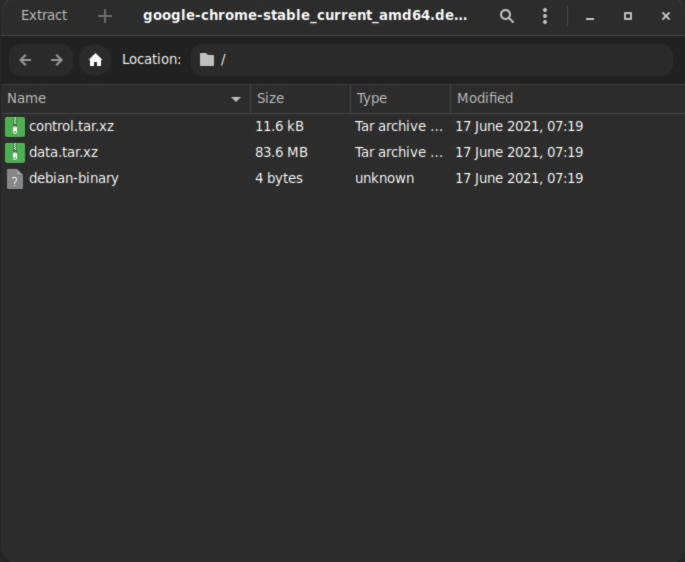
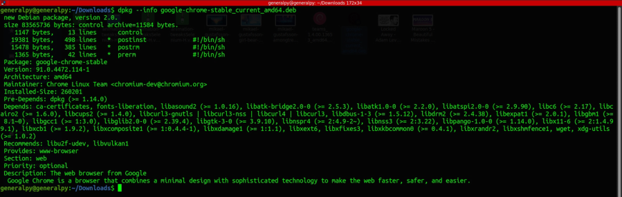
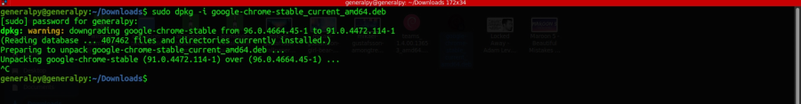
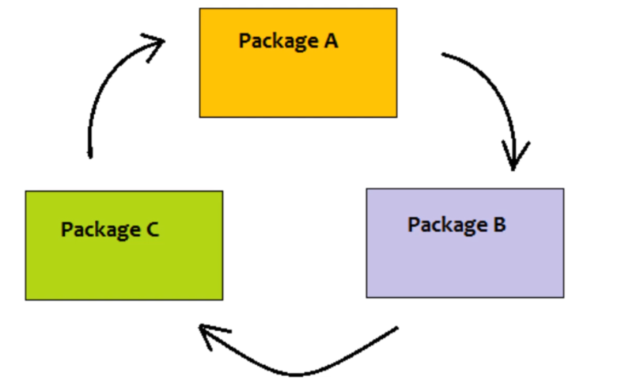
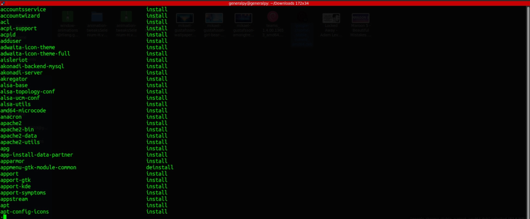
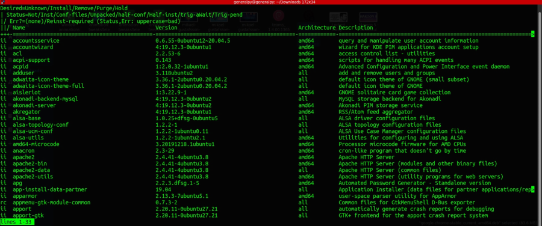
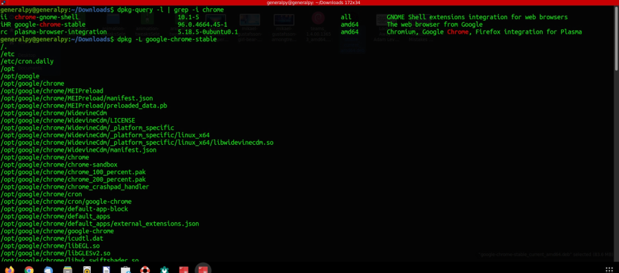
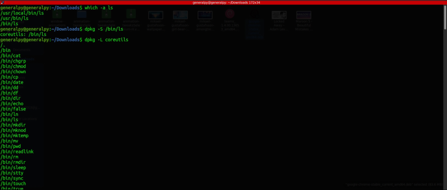

dpkg is a low level tool which can be used to manage packages on debian based linux distros.
In linux we have to either install sources by building them from source, which is taking source code and compiling the code to get executable or use binaries which are precompiled executables.
We can use dpkg to install packages using .deb files where deb stands for debra which is name of wife of dpkg creator.
deb files are archives which contain executable and files required by the application along with some metadata.

Data inside the deb package of chrome. Here control.tar.xz archive contains metadata and data.tar.xz contains files required by the application.
Other advanced package management tools like apt, synaptic etc. use dpkg under the hood. dpkg by itself cannot use repositories and cannot resolve dependecies.
To get info about a deb archive user :
dpkg --info deb_file_name

To install a package from a deb file, use -i flag with dpkg.
Note that only root can make package changes in a linux system
sudo dpkg -i package_nameChrome was preinstalled here.

We can also install multiple packages at once using dpkg by writing names of all pakages after -i flag. This is extremely useful when dealing with cyclic dependencies.

Above image is an example of cyclic dependency. Package A depends on B, B depends on C and C depends on A. In this type of case we have to write names of all packages on a single line.
--get-selections flag can be used to show list of all installed packages on the system.
Using less with dpkg.

To see a list of all packages installed along with package version, architecture, short desc etc use
dpkg-query -l

Here two letters at the beginning (eg : ii) show the desired state and status of the package respectively.
To see a list of all files installed by a package use -L flag with dpkg. When using this option, we have to get full name of the package which we can get using greping any of the above command.

To know which file belongs to which package we can use -S option followed by that file's absolute path.

To remove a package use -r flag with dpkg. When using -r, some config files of the package will remain and will persist on next installation. To remove those files use -P or --purge flag with dpkg.